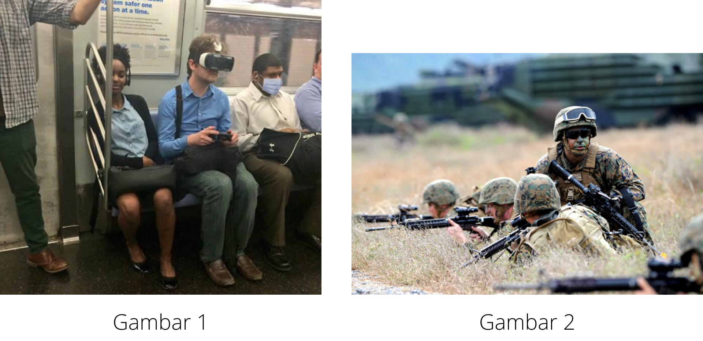
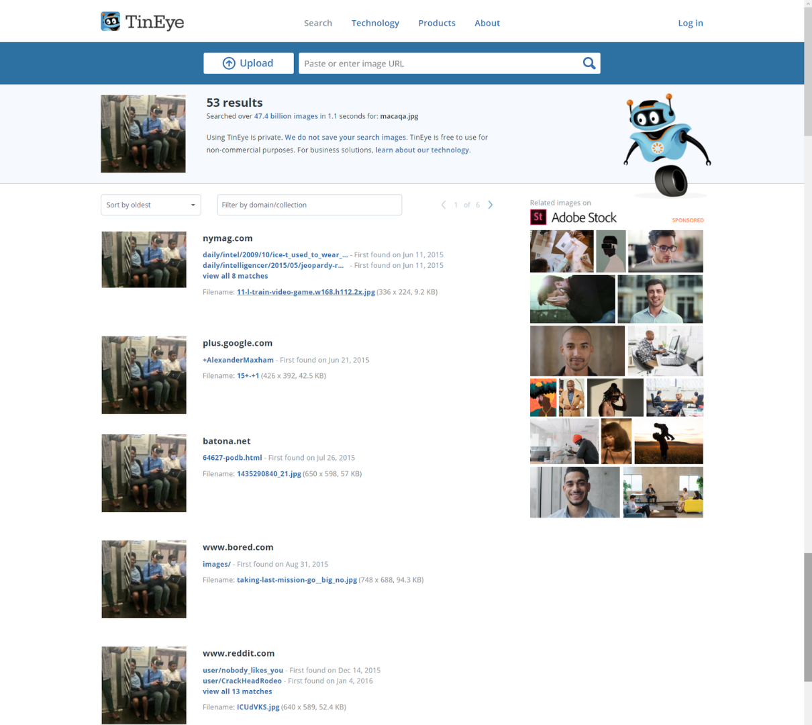
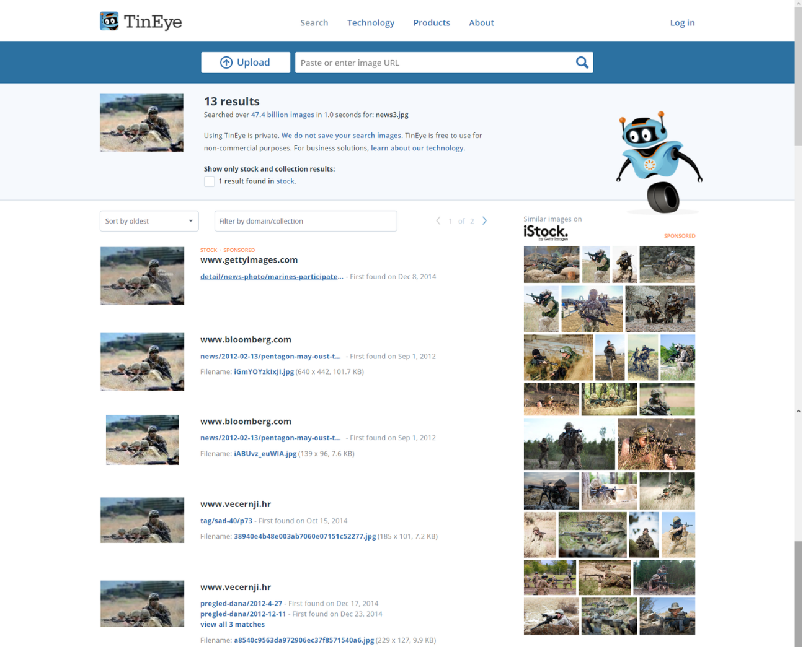
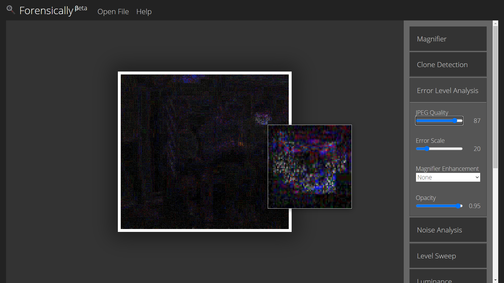
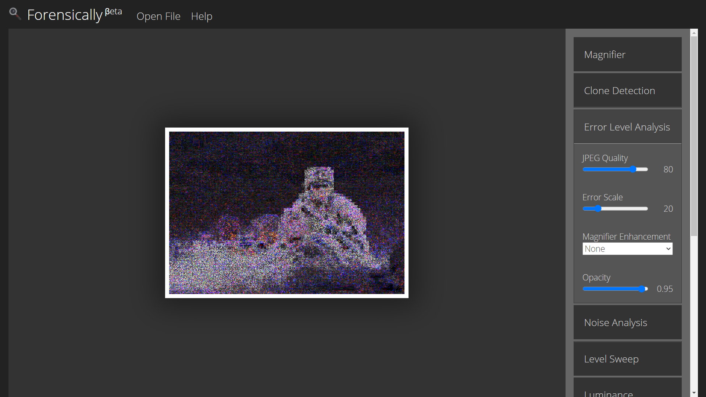
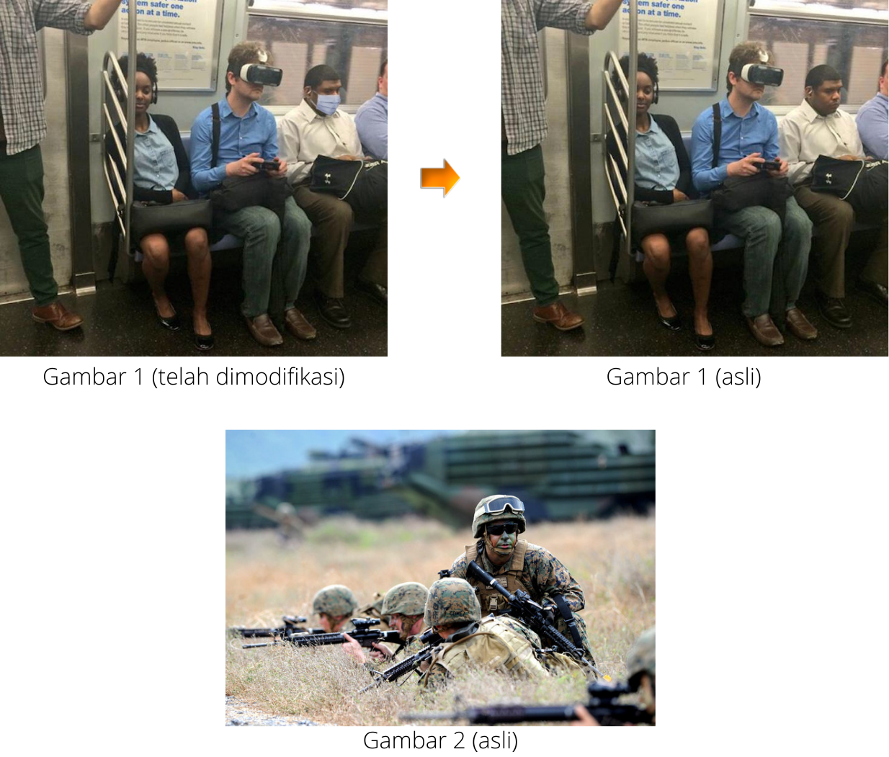

IMAGE FORENSICS UNTUK DETEKSI REKAYASA FOTO DIGITAL
Forensik Digital
Image Forensic

Digital forensik adalah cabang ilmu komputer yang berfokus pada pengembangan bukti yang berkaitan dengan file digital. Bukti forensik digital akan berhubungan dengan dokumen komputer, email, teks, foto digital, program perangkat lunak, atau rekaman digital lainnya yang berkaitan dengan kasus hukum. Landasan forensik digital ialah praktik pengumpulan, analisis, dan pelaporan data digital. Investigasi forensik digital memiliki penerapan yang sangat beragam.
Dalam image forensic, objek yang diperiksa dan dianalisis adalah image file. Image file itu sendiri memiliki dua pengertian yang berbeda. Pertama merujuk pada hasil forensic imaging (duplikasi secara fisik sektor per sektor) yang menggunakan metode terkini disk to file. Kedua merujuk pada file gambar hasil fotografi menggunakan kamera, handycam, atau handphone yang menggunakan sistem penyimpanan file digital.
Tujuan umum dari teknik forensic (untuk memeriksa keaslian file foto) yaitu untuk membuktikan bahwa sebuah foto adalah foto asli/palsu, untuk digunakan sebagai dokumen analisis intelijen dan sebagai alat bukti yang bisa diajukan dalam proses hukum pengadilan. Dalam pemeriksaan keaslian file foto digunakan beberapa teknik forensik untuk pembuktian dan pemeriksaan terhadap foto tersebut baik dengan menggunakan software yang digunakan untuk memeriksa data sensitif yang terdapat di dalam foto, maupun dengan bantuan alat-alat dan teknik fotografi.
Metode ReservingMetode reversing yaitu mencocokkan foto yang di-upload dengan foto yang sudah ada di website dan media sosial. Metode ini dapat dilakukan melalui platform Google Image atau TineEye.
(Note: Metode reversing bukanlah bentuk forensic digital karena hanya mencocokkan foto, bukan untuk menganalisis foto)
Metode Algoritma Error Level Analysis (ELA)Error Level Analysis (ELA) adalah algoritma kompresi JPEG untuk deteksi forensik gambar. ELA bekerja dengan cara mendecode gambar untuk melihat kemungkinan manipulasi. Salah satu kelebihan logaritma ini adalah kemampuannya mendeteksi pada setiap area yang dipetakan dalam level kompresi yang berbeda. Ini karena algoritma JPEG mengompresi gambar yang hilang: algoritme ini menghilangkan sejumlah frekuensi tinggi dan mengurangi perbedaan antara tepi, tekstur, dan permukaan kontras tinggi. Setiap pengkodean ulang (perekaman ulang) gambar menambah lebih banyak penurunan kualitas gambar.
ELA membagi gambar menjadi 8 x 8 blok dan dikompres secara independen dengan tingkat kesalahan hingga 95%. Jika gambar tidak dimodifikasi, persegi harus memiliki potensi kesalahan yang serupa (memberikan sekitar tingkat kualitas yang sama). Jika gambar dimodifikasi, area yang dimodifikasi akan muncul dengan tingkat kesalahan yang lebih tinggi (lebih terang).
Secara konkret, hal-hal yang harus diperhatikan:
- Tepi = Tepi yang serupa harus memiliki kecerahan yang sama pada hasil ELA. Semua tepi kontras tinggi harus terlihat sama dan semua tepi kontras rendah akan terlihat sama. Dengan foto asli, tepi kontras rendah harus hampir seterang tepi kontras tinggi
- Tekstur = Tekstur serupa harus memiliki pewarnaan serupa di bawah ELA. Area dengan lebih banyak detail di permukaan, seperti close-up bola basket, kemungkinan akan memiliki skor ELA yang lebih tinggi daripada permukaan yang mulus
- Permukaan = Terlepas dari warna permukaan yang sebenarnya, semua permukaan datar harus memiliki warna yang kurang lebih sama di bawah ELA
(Note: ELA hanyalah sebuah algoritma yang menunjukkan jumlah perbedaan yang terjadi saat merekam ulang JPEG; Lebih banyak putih berarti lebih banyak perubahan, dan hitam berarti tidak ada perubahan; Hasil ELA yang “blank” tidak berarti diubah, putih menandakan potensi tingkat kesalahan yang lebih tinggi yang harus dibandingkan dengan tepi dan permukaan yang serupa pada gambar; Saat menganalisis gambar disarankan menggunakan versi gambar dengan resolusi yang terbaik untuk hasil yang lebih akurat; Jika sebuah gambar dikompresi berulang kali dalam format JPEG, ELA akan memberikan gambar hitam; Serta interpretasi hasil mungkin tidak konklusif, maka penting untuk memvalidasi hasil dengan teknik analisis dan algoritma lain)
Studi Kasus Image Forensic
Pada studi kasus ini menggunakan dua buah tools yaitu TinEye (https://tineye.com) untuk reverse pencarian gambar atau mencocokkan foto dan ForensicallyBeta (https://29a.ch/photo-forensics) untuk Teknik Error Level Analysis. Berikut gambar 1 dan 2 yang akan diselidiki apakah kedua gambar tersebut asli atau telah mengalami modifikasi.
nothing ges
TinEye- Gambar 1 
- Gambar 2 
Pada penelusuan gambar 1 menggunakan TinEye di atas, terdapat 53 hasil penelusuran yang menampilkan gambar dalam 2 versi, sehingga dapat diasumsikan bahwa salah satu dari foto tersebut adalah palsu/sudah dimodifikasi, selanjutnya masih akan diselidiki menggunakan Teknik Error Level Analysis.
Pada penelusuan gambar 2 menggunakan TinEye di atas, terdapat 13 hasil penelusuran yang menampilkan gambar dalam 1 versi, sehingga dapat diasumsikan bahwa foto tersebut adalah asli/tanpa modifikasi, namun masih akan diselidiki menggunakan teknik Error Level Analysis.
- Gambar 1 
- Gambar 2 
Gambar di atas merupakan hasil setelah diproses menggunakan ForensicallyBeta dengan teknik Error Level Analysis. Gambar tersebut memiliki perbedaan kontras yang cukup menonjol yaitu pada bagian yang diperbesar.
Gambar di atas merupakan hasil setelah diproses menggunakan ForensicallyBeta dengan teknik Error Level Analysis. Gambar tersebut memiliki perbedaan kontras antara bagian gambar yang blur (efek bokeh) dan yang tidak blur, namun masing-masing kedua bagian tersebut tidak memiliki kontras yang menunjukkan ada penonjolan disuatu bagian (gambar memiliki tingkat kesalahan yang sama secara signifikan / memiliki warna yang kurang lebih sama).
Berdasarkan hasil reversing dan analisis menggunakan algoritma ELA, gambar 1 telah mengalami modifikasi (penambahan objek masker). Sedangkan gambar 2 tidak mengalami modifikasi (asli).
Referensi
https://tineye.com/
https://29a.ch/photo-forensics/
https://www.mathemathieu.fr/component/attachments/download/1341
https://jatengtoday.com/forensik-foto-digital-18841
http://journal.binadarma.ac.id/index.php/jurnalmatrik/article/view/518/274
https://www.researchgate.net/publication/336847798_Analisis_Image_Forensic_Untuk_Mendeteksi_Pemalsuan_Foto_Digital